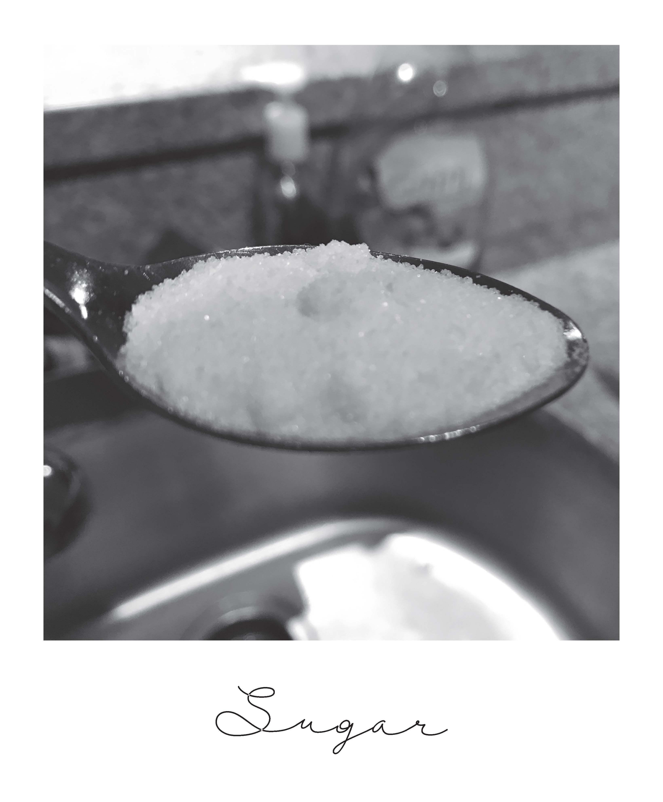
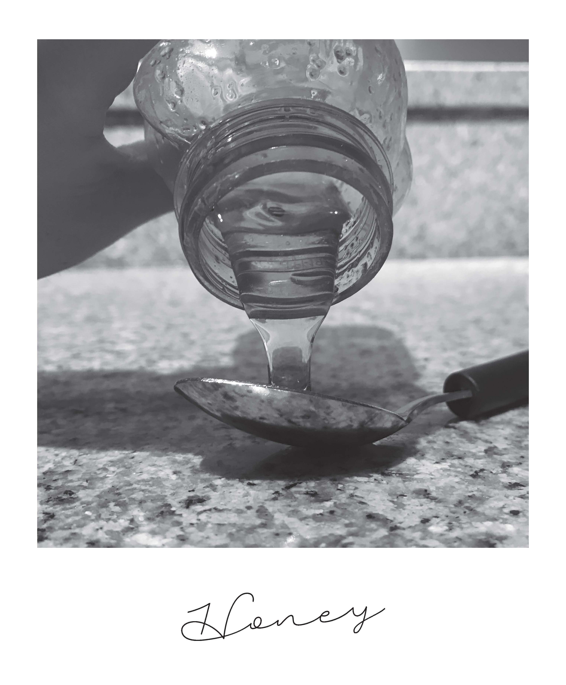

-

-

-

DIY Sugar Lip Scrub
Want something a little more luxurious than chapstick?
Published Date August 27, 2017
Chapstick not doing it for you anymore? Want a luxury lip scrub without the luxury price? Well here's a DIY lipsrub that only uses three ingredients and takes less than five minutes to make! Not only does this amazing product leave your lips feeling soft and silky, but your lip scrub will last up to a couple weeks.
Raw Honey is natural and helps add an even and silky texture to your lips. And sugar’s small particles make an excellent topical exfoliant, and are used in a number of body scrubs to exfoliate dead surface skin cells and reveal the glowing, healthy-looking skin underneath. Sugar scrubs also have a few benefits over salt scrubs.